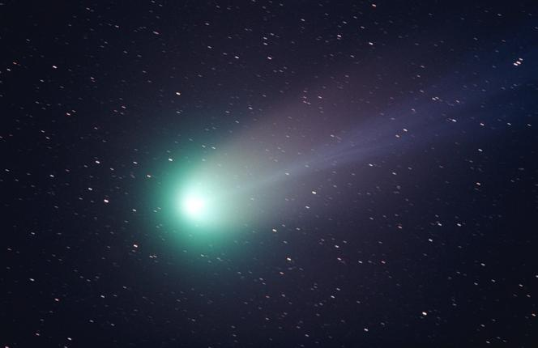

12.01.2023
Kometa ta okrąża Słońce co 50 tysięcy lat. Niedługo będzie widoczna gołym okiem
Już w najbliższych dniach warto obserwować nocne niebo, ponieważ do Ziemi zbliża się niewidziana od 50 tysięcy lat kometa C/2022 E3 (ZTF). Jej odkrycia dokonano 2 marca 2022 za pomocą teleskopu Zwicky Transient Facility i ustalono, że ostatni raz przemierzała okolice naszego układu Słonecznego 50 tysięcy lat temu. To oznacza, że mogli ją widzieć neandertalczycy, a teraz my będziemy mieli tę niezwykłą okazję.